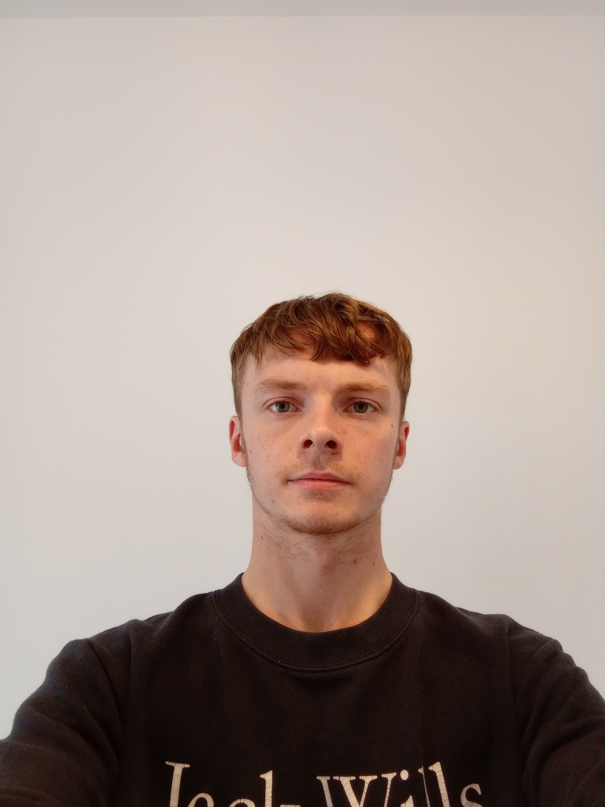

My Resume / CV

Summary
Dedicated and compassionate professional with experience in healthcare coordination, community engagement, and mental health advocacy. Proven track record as a Community Connector and Peer Mentor for a mental health charity, and Fund Writer. Adept at developing and implementing community programs, providing peer support, and securing funding for vital initiatives. Seeking a position where I can leverage my skills in program management, client support, and community outreach to make a meaningful impact.
Education
- Sunderland University (2022 - 2024)
- Masters of Science in Psychology
- Ulster University (2019 - 2022)
- Bachelors of Science in Psychology
- Ark Walworth Academy Sixth (2017 - 2019)
- A-Levels
- Psychology A
- Economics A
- Chemistry D
- Ark Walworth Academy (2012 - 2017)
- GCSE's
- Mathematics 6
- English Language 6
- English Literature 7
- Biology B
- Chemistry B
- Physics B
- Geography B
- Spanish C
- Drama C
Work Experience
- Fund Writing Manager (June 2024 - present)
- Care Co-ordinator (March 2024 - June 2024)
- Community Connector (May 2023 - March 2024)
- Volunteer Peer Mentor (October 2022 - May 2023)
Skills
- Community Engagement: Strong ability to connect with community members and develop programs that address their needs.
- Care Coordination: Experienced in coordinating care plans for individuals, ensuring they receive appropriate services and support.
- Program Development and Management: Skilled in creating and managing community programs aimed at improving mental health and well-being.
- Fundraising and Grant Writing: Successful track record in writing grant proposals and securing funding for various projects.
- Client Advocacy: Dedicated to advocating for clients’ needs and ensuring their voices are heard in healthcare and community settings.
- Communication and Interpersonal Skills: Excellent verbal and written communication skills, with the ability to build rapport with diverse populations.
- Research and Data Analysis: Strong research skills, with the ability to analyse data and apply findings to improve practices and outcomes.
Hobbies
Contact details